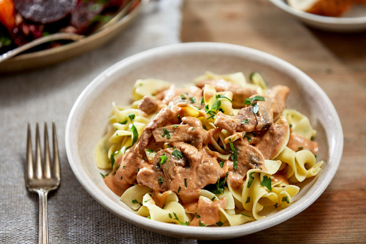

Instant Pot Beef Stroganoff

What is Beef Stroganoff?
Beef Stroganoff or Beef Stroganov is originally a Russian dish of sautéed pieces of beef served in a sauce of mustard and smetana. From its origins in mid-19th-century Russia, it has become popular around the world, with considerable variation from the original recipe. Mushrooms are common in many variants
The dish is named after one of the members of the influential Stroganov family. A legend attributes its invention to French chefs working for the family, but several researchers point out that the recipe is a refined version of older Russian dishes.
Ingredients
- 2 tablespoons unsalted butter
- 1 tablespoon olive oil
- ¾ cup finely chopped yellow onion
- 3 cloves garlic, minced
- ½ teaspoon crushed red pepper
- ½ cup vodka
- 2½ cups water
- 1 (16 ounce) package uncooked penne pasta
- 2 teaspoons kosher salt
- 1 (28 ounce) can crushed tomatoes
- ½ cup heavy cream
- ⅓ cup grated Parmesan cheese
- ¼ teaspoon ground black pepper
Directions
- Step 1: Turn on a multi-functional pressure cooker (such as Instant Pot®) and select Saute function. Select High temperature setting, and preheat the pot for 1 to 2 minutes. Add butter and oil. Add onion and cook, stirring constantly, until translucent, about 3 minutes. Add garlic and crushed red pepper, and cook, stirring often, for 1 minute.
- NOTE: Make sure to stir constantly to avoid burning
- Step 2: Pour in vodka and cook until reduced by half, about 3 minutes. Cancel Saute function. Stir in water, penne, and salt. Pour tomatoes over penne; do not stir. Close and lock the lid. Select high pressure according to manufacturer's instructions; set timer for 4 minutes. Allow 10 to 15 minutes for pressure to build.
- Step 3: Release pressure carefully using the quick-release method according to manufacturer's instructions, about 5 minutes. Unlock and remove the lid. Stir in cream and Parmesan cheese; let stand for 3 minutes. Stir in pepper.